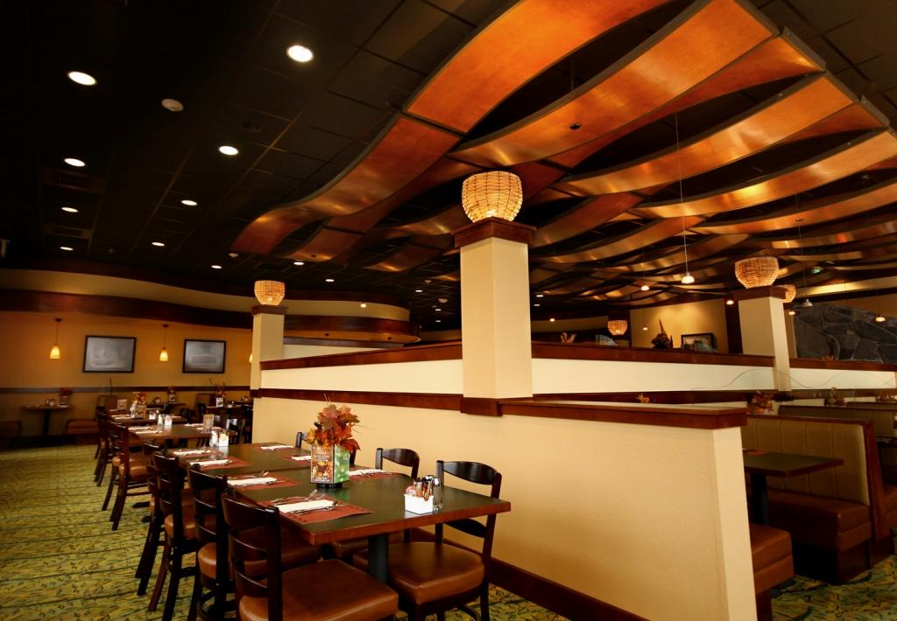

Haukai is a NZ Maori restaurant. Step inside to a mini gallery displaying Maori arts and crafts. View our cultural performance that are available at set times. Experience the taste and smell of a very kiwi cuisine.
Our food is sourced locally from an organic farm, while our seafood is brought to you freshly caught. We also have NZ beverages to match your meals.
After graduating from Le Cordon Bleu in Paris, France, Able has worked at fine dining restaurants in Europe before finally moving to Bay of Plenty. Hana, formally a curator for the NZ Museum brings a wealth of NZ’s rich history of the Maori culture embodying her wealth of knowledge into the Haukai Restaurant. Able and Hana hope to welcome you soon to enjoy an enriching fine dining experience.